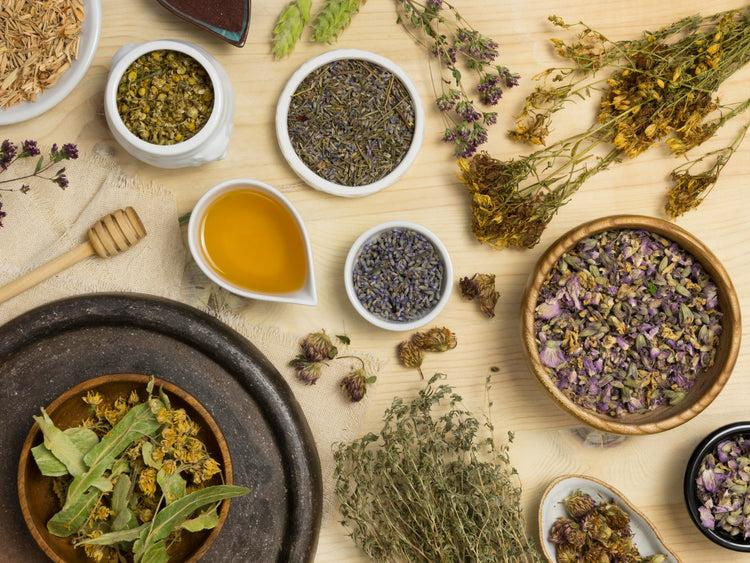

Greeva Pichu
30–45 minWarm oil therapy focused on the neck to ease stiffness and muscular tension.
Learn about our therapies before booking a consultation.
Discover traditional Ayurvedic therapies designed to support your individual wellness goals, with clear guidance to help you choose the right care.
Explore localized therapies, oil treatments, steam therapies, supportive procedures, and classical Panchakarma care.
Targeted oil and retention therapies focused on specific joints, spine, head, and sensory regions.
Warm oil therapy focused on the neck to ease stiffness and muscular tension.

Warm medicated oil is gently held over the neck for soothing care.

A gentle warm-oil treatment over the chest, traditionally used to encourage relaxation.

Warm oil is applied around the knee to ease everyday discomfort.

Warm medicated oil is held over the knee as part of traditional joint care.

Focused lower-back oil application used to reduce tightness and daily strain.

Warm oil is held over the lower back to ease stiffness and tension.

A traditional eye treatment intended to soothe tired, dry eyes.

Warm oil is applied to the back to encourage relaxation and comfort.

Warm oil is held over the back as part of traditional care for stiffness.

Warm oil is gently held over the scalp in a calming Ayurvedic treatment.

A small-dose oil enema used in Ayurveda to support Vata balance.
Nourishing oil-based therapies that support circulation, relaxation, body comfort, and healthy tissue lubrication.

Full-body medicated oil massage for relaxation, circulation, and skin nourishment.

Therapeutic foot massage to reduce fatigue and promote deep calm.

Warm oil bath therapy combining pouring and massage for rejuvenation and comfort.

Head massage with medicated oils to ease stress and support scalp wellness.

A massage using herbal powders as part of traditional Ayurvedic care.
Warming therapies that help release stiffness, support circulation, and prepare the body for deeper Ayurvedic care.

Warm herbal powder bundles are used to ease stiffness and body tension.

Steam is directed to areas of stiffness to encourage ease of movement.

Warm herbal leaf bundles are applied as part of traditional body care.

A warm liquid is poured over the body in a calming Ayurvedic treatment.

Whole-body steam therapy traditionally used to ease heaviness and stiffness.

Warm rice bundles are used in a nourishing, full-body Ayurvedic treatment.

Warm sand bundles are applied to areas of stiffness and discomfort.

A warm herbal poultice is applied to areas of discomfort.
Supportive Ayurvedic procedures for facial care, scalp comfort, oral wellness, ear care, and deep relaxation therapies.

Herbal skin ritual for cleansing, glow, and natural facial rejuvenation.

Medicated oil instillation in the ears for dryness, discomfort, and sensory care.

A traditional ear treatment using gentle herbal fumigation.

Hold and swish oil in the mouth as part of a traditional oral-care practice.

Herbal facial paste application to soothe, brighten, and refresh the skin.

Herbal pouch facial massage for circulation, tone, and natural radiance.

A gentle stream of warm oil flows over the forehead in this calming treatment.

Medicated paste application on the scalp crown for cooling and head comfort.

A gentle stream of medicated buttermilk is used to soothe the scalp.
A traditional eye treatment intended to soothe dryness and tired eyes.

A warm herbal poultice is applied to areas of stiffness or discomfort.
Foundational detox and cleansing therapies used in classical Ayurveda for guided purification and deeper internal balance.

A herbal decoction enema used in supervised Panchakarma care.

A medicated oil enema used in Ayurveda to support Vata balance.

Medicated oils or herbs are gently administered through the nose.

A supervised Panchakarma procedure carried out as part of detox care.

A supervised cleansing therapy used in traditional Panchakarma care.

A traditional procedure used selectively under professional supervision.

A traditional procedure offered only when considered appropriate by the doctor.
Share your symptoms, routine, and health priorities with the doctor.
Discuss your needs with the doctor and receive an Ayurvedic assessment.
Follow a recommended therapy, diet, or herbal support plan.
Review your progress and next steps with the doctor.
